The illustrated audio fieldbook to SWARM SAR.
Om Rashiya · Yash Bharvada · Purva Shah · Pankti Akbari
A team of flying and ground robots. An unknown disaster site. A search that depends on what each robot can see, hear, remember and share.
Start with the story. Learn the science. Follow the actual code. Then walk into your hackathon able to explain what your team built—and what the evidence supports.
REAL PROJECT CAPTURE
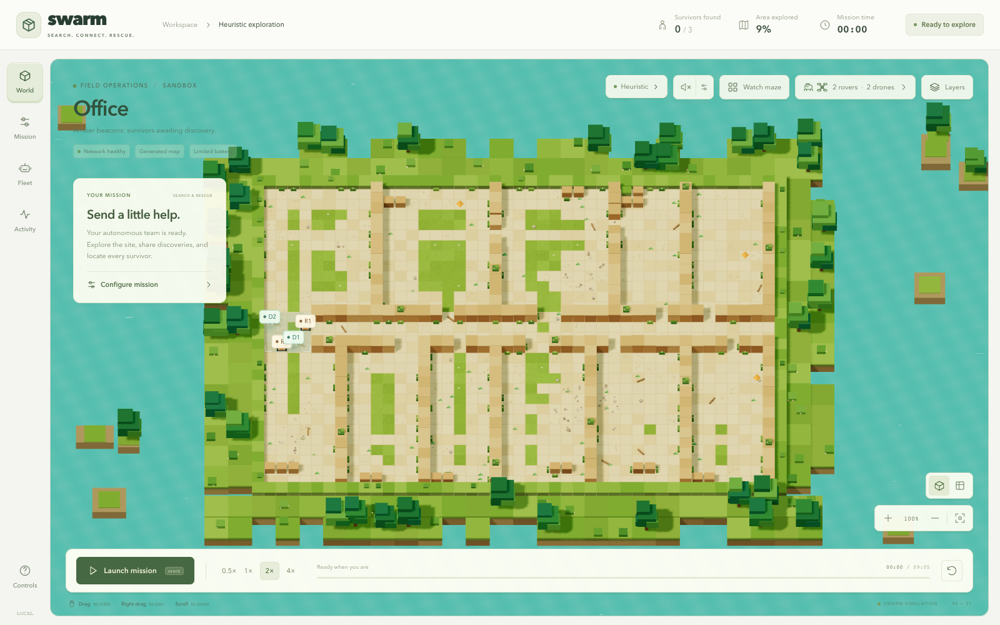
Om Rashiya · Yash Bharvada · Purva Shah · Pankti Akbari
English narration · Real project captures · Interactive field notes · Source-linked explanations
Repository edition: 31 October 2026. Extended chapters cover rover SLAM, the observatory, large-map experiments and one-command startup. Research prototype for autonomous disaster-response search and rescue.
You know how to code. You do not need to know robotics yet.
This book begins with an imaginary rescue so the vocabulary has somewhere to live. A robot is a searcher. A sensor is an imperfect clue. A policy is a way to choose. A reward is feedback after a choice. Later we replace these everyday words with the mathematical and software contracts used in this repository.
The same idea appears more than once at different depths. First you meet it as a story, then as a technical concept, then as a file or function. That repetition is deliberate: understanding an equation is easier once you understand the problem it solves.
Read the chapters in order on your first pass. On your second pass, use the contents, search and file atlas. The narration reads the prose and field notes; source listings and interactive controls are reference material rather than spoken code.
Turn pages with the arrows or your keyboard. Listen at your preferred speed, and enable automatic page turns for continuous narration. Your place and bookmarks stay in this browser.
Screenshots are original project artifacts. Small diagrams and interactive examples are teaching illustrations, explicitly labelled. They are not new robot experiments.
The team behind the prototype.
The project team is Om Rashiya, Yash Bharvada, Purva Shah and Pankti Akbari. This edition credits all four team members. The repository does not provide an agreed division of individual ownership, so this book does not assign invented job titles, biographies or contributions.
For a hackathon, every member should know the common story: why heterogeneous robots matter, how local decisions work, where learning enters the system, and which demonstrations have actually been measured. A teammate who presents the UI should still be able to explain the PPO boundary. A teammate who presents training should still be able to explain a ROS topic.
Choose presentation responsibilities together during rehearsal. Let one person tell the rescue story, one trace the architecture, one explain the learning and evidence, and one operate the demonstration. These are suggested speaking roles, not claims about who wrote which files.
Each person explains one complete mission without looking at the code. The others ask: What does the robot know? Who chooses the action? What moves it? How do we know the result is valid?
If those answers agree across the team, your presentation will feel like one coherent project.
Three routes through the same complete book.
The first-time learner: read from the rescue story through PPO. Keep the simple analogies, and do not worry about memorizing every hyperparameter. Return to the source buttons when you recognize the concepts.
The developer: read the system map, observation/action contract, training pipeline, browser bridge and repository atlas. Trace a single action from an observation to a safe movement and back.
The presenter: read the architecture, evidence and hackathon chapters, then rehearse with the question cards. Use the longer chapters to repair gaps instead of memorizing a pitch you cannot defend.
A detailed explanation of the checked-in project and its recorded evidence. It does not assume that a planning document was implemented just because it describes an attractive idea.
Important distinctions recur throughout: heuristic versus learned decisions; grid simulation versus physical simulation; development evidence versus final tests; survivor detection versus physical rescue.
A search party with small flashlights and unreliable walkie-talkies.
Imagine an earthquake has damaged a building. You cannot trust GPS indoors. Corridors are unfamiliar, some paths are blocked, and sending people inside may be dangerous. You send small robots ahead to look for trapped people.
A rover rolls along the floor. A drone is a different kind of teammate with different sensing and energy assumptions. Each begins near the entrance with almost no knowledge of the rest of the map. Think of a sheet of paper covered in gray squares. Looking around turns some gray squares into known paths or obstacles.
No robot gets a magic list of survivor coordinates. One notices a warm signal; another hears a weak sound. They have to approach, collect evidence, and confirm someone nearby. When their radios work, they can share discoveries and plans so they do not all search the same corner.
How can several imperfect searchers cover unknown space, investigate clues and help one another without a leader who sees everything?
That is the project’s research question. The disaster story motivates the work; the repository tests a simplified version inside software.
Heterogeneous means the team has different capabilities.
A school search team might include someone who can look over shelves and someone who can squeeze under a desk. Different strengths can help, but only if the team uses them sensibly. Our swarm is heterogeneous because the rover and drone configurations are different.
In the default Python grid configuration, a rover sees within four cells, starts with 300 battery units and spends two units entering rubble. A drone sees within seven cells, starts with 240 units and spends one unit on rubble. Both move on the same two-dimensional grid, one cell per simulation step.
The browser draws flying drones, but that picture does not add three-dimensional flight to the grid engine. In the grid model, both types are blocked by WALL cells. Gazebo is the separate place where the project models height, wheel contact and rotor thrust.
| Default grid parameter | Rover | Drone |
|---|---|---|
| Vision radius | 4 cells | 7 cells |
| Thermal radius | 6 cells | 8 cells |
| Acoustic radius | 10 cells | 12 cells |
| Initial battery | 300 units | 240 units |
| Rubble entry cost | 2 units | 1 unit |
These are abstract configuration values, not measured sensor ranges or real battery capacities.
A frontier is a sensible place to look next.
Suppose your flashlight shows a corridor but you have not looked around its corner. The boundary between a known path and unexplored space is a frontier. Going there can reveal something new.
Searching every unknown square directly is difficult because you do not know which ones are walls. Searching reachable frontier points is more practical: choose a place at the edge of your current knowledge, plan a route through what you believe is traversable, and update the plan when new information arrives.
Our robots receive up to five frontier choices. They can also choose to investigate a sensor clue or hold position. This makes the decision problem smaller than choosing any coordinate in a building. The learned policy chooses a high-level option; ordinary planning and safety code turn that option into a movement.
Reveal cells in the little teaching map. Watch how the frontier changes as known free space grows. This is an explanation of the idea, not a live run of the project simulator.
Remember this separation: choosing a destination and finding a route to it are different jobs.
The child-friendly version of reinforcement learning.
Imagine teaching a robot with a game. It tries a choice, the world changes, and it receives points. Finding a survivor earns a large reward. Revealing useful new map cells earns a smaller reward. Wasting time has a small cost.
At first, the robot’s choices are poor. After many practice missions, training changes the numbers inside its neural network so useful choices become more likely. It is learning a decision rule from experience. That is reinforcement learning.
Our project also gives the learner a head start by showing it examples from a programmed expert. Watching the expert is behavior cloning. Practicing afterward with rewards is PPO training. The expert, the cloned model and the PPO model are related approaches, but they are not the same thing.
Reinforcement learning means learning which choices lead to better outcomes by trying choices and receiving feedback.
The robots are trained in simulation. During the normal browser PPO demonstration, the saved policy makes decisions; it is not retraining itself while you watch.
A confirmed location is the output of this prototype.
In everyday language, “rescue” can mean bringing someone out safely. In this software, a survivor is marked found when the simulation’s confirmation rules are satisfied. The robots do not lift a person, provide treatment or carry a survivor outside.
Signals alone are not certainty. A noisy warm reading can be a false positive. Confirmation ultimately depends on the robot being sufficiently close with line of sight, after the relevant evidence logic selects confirmation. The default grid confirmation radius is two cells.
The browser’s discovery stories make the interface understandable and emotional. The dialogue is authored presentation content. It is not generated from a real person’s sensor record. The actual mission state underneath still controls whether a survivor has been confirmed.
REAL PROJECT CAPTURE
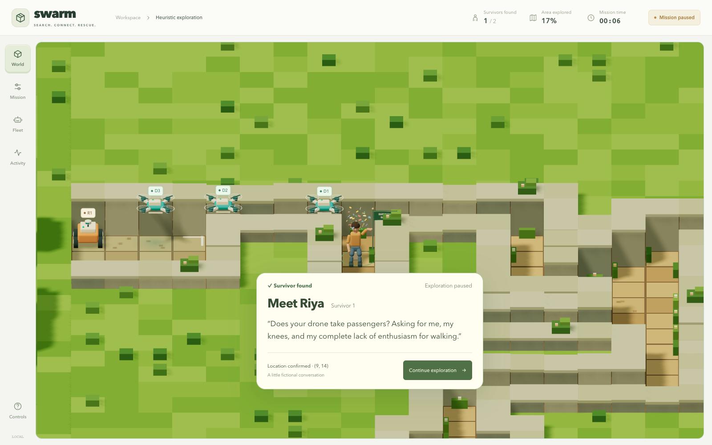
“Our prototype searches for and confirms simulated survivor locations. Physical extraction is outside this demonstration.”
That precise language makes the real engineering easier to defend. You can show detection, coordination and mapping without implying a complete field rescue system.
Each neighborhood has a clear responsibility.
The frontend is the control room you can see: a React application with a three-dimensional scene, controls and telemetry. The simulation code is the rulebook for worlds, robots, sensors, radio delivery and mission endings. Training code creates experience, fits policies and evaluates candidates. Model folders preserve the chosen weights and their provenance.
The backend is a bridge: it loads a verified Python policy and exposes missions over HTTP so the frontend can show the policy’s real simulation state. The ROS workspace explores another kind of execution, where robot models and physical motion run in Gazebo and messages flow through ROS 2.
The project is easier to understand if you ask three questions about every component: What state does it own? What information can it read? What output does it produce? A renderer may see the whole map for the operator; that does not mean a policy receives the whole map.
Browser heuristic mode owns its state in TypeScript. PPO mode owns its state in Python. Gazebo owns the rigid-body physics state of the ROS demonstration.
The book itself is a separate static learning website. It does not host or run the Python checkpoint service.
Do not collapse the runtimes into one claim.
| Path | Who chooses? | Who simulates? |
|---|---|---|
| Browser heuristic | TypeScript decentralized rules | TypeScript grid engine |
| Python PPO → browser | Saved rover/drone policies | Python grid environment |
| ROS physics demo | Default waypoint controllers | Gazebo rigid-body simulation |
The heuristic path is useful without Python. The learned path requires the local Python service and actually uses the saved actor modules. The checked-in default Gazebo path demonstrates repeatable physical motion with explicit routes.
These paths share ideas—private maps, heterogeneous robots and peer information—but their implementations and validation scopes differ. A good result on one path is not automatically a result on another. The browser and Python random generators also differ, so the same numeric seed does not make their heuristic worlds bit-for-bit identical.
Supplied Gazebo screenshots have a host log reporting loaded PPO actors. Those actor hashes differ from the selected grid-policy handoff, and the matching host integration is absent here. The captures document that session; they do not make the checked-in ROS launch a reproducible deployment of our selected policy.
The project grew in layers, and the layers remain visible.
Step 1: build the deterministic world, heterogeneous robots, sensors and environment API. Without a trustworthy world, a learning algorithm would optimize against unreliable rules.
Step 2: build a coordinated frontier baseline with topology and evidence handling. It provides a non-learning reference and exposes navigation problems. Step 2.5: investigate scalability and how map area, fleet size and mission budgets affect performance.
Step 3: add PPO with rover/drone parameter sharing, the original 129-value contract and an early checkpoint. Step 4: introduce explicit delayed, lossy peer transport and a decentralized frontier expert. Step 5 and later: integrate, audit, expand GPU training, preserve a selected checkpoint and show Python PPO missions in the browser.
An older compatibility document may say the browser has no PPO mode. That describes an earlier browser-only design. The current backend and PPO bridge implement a later, explicit Python-backed mode.
Likewise, a plan mentioning GNNs or SLAM is not proof those algorithms were built. Always check the current executable path and later audit.
A strong presentation separates capability from aspiration.
The repository implements local-belief grid simulation, frontier and decentralized heuristic controllers, noisy sensing, peer map/evidence exchange, cooperative PPO, a recurrent GPU policy path, behavior cloning, development cohorts and a browser policy adapter. The ROS workspace includes physical models, bridge configuration, messages and controllers.
Graph neural networks are mentioned as a challenge hint, but the checked-in decision path is not a GNN. NetworkX graphs represent topological information; that is ordinary graph data processing, not graph neural learning. The new ROS source integrates per-rover slam_toolbox and known-start map sharing. It has local software validation, but live Linux SLAM and joint collaborative pose-graph optimization are not established here.
GPS-denied motivation means the policy does not receive GPS. The simulator still has coordinates and simplified odometry. Some ROS demo feedback uses simulator world pose. Those abstractions are useful for experiments but do not establish real-world GPS-free localization.
“A heterogeneous search-and-rescue research prototype with decentralized local observations, shared recurrent PPO policies, peer communication, and separate browser and ROS/Gazebo demonstrations.”
Next steps include a reproducible learned-policy ROS adapter, realistic localization/sensing, sealed final evaluation and physical testing.
The grid is a deliberate abstraction.
The Python world is an array. Cells represent unknown belief, free space, walls or rubble. The physical truth map exists in the simulator; each robot has a separate belief array that begins mostly unknown. These are different data structures with different permissions.
World generation produces rooms and corridors, caves or mazes, with footprint options such as procedural shapes and tunnels. Configuration sets width, height, spawn area, obstacle structure and survivor placement. Generation retries and reachability checks avoid handing the agents impossible tasks caused by disconnected survivor placement.
The default shared world configuration is 32 by 32 cells with a protected start near the entrance and one to four survivors. Training overrides these defaults to create a distribution of maps. Browser presets have their own generation rules and names, such as Office, Mine and Apartment.
It makes sensing, motion, pathfinding, rewards and repeatability manageable. It is fast enough to run many practice missions. Its simplicity also limits what a result means: a grid step is not a validated wheel trajectory or flight maneuver.
Repeatability turns a demo into an inspectable experiment.
A pseudo-random generator produces a reproducible sequence from a seed. The core world resets its generator with the episode seed and uses it for world generation, survivor placement, motion conflicts, odometry drift and sensor randomness. A seed plus the same action sequence identifies a core episode.
A checkpoint adds another ingredient: how the policy chooses from its action probabilities. Inference supports seeded categorical sampling when supplied a generator and argmax choice when no generator is supplied. You must preserve the inference mode as well as the seed to reproduce a policy rollout.
Repeatability does not mean every implementation with the same seed agrees. The browser heuristic uses a different random-number implementation and some different scenario rules. CPU/GPU versions and library changes can also affect numerical behavior, which is why the repository preserves runtime definitions and model/source hashes.
Store the source revision, configuration, seed, checkpoint identity, action-selection mode and metrics. A screenshot alone rarely preserves enough information to reproduce a run.
The capture manifest records actual UI state and source hashes for the documented browser images.
The environment turns decisions into consequences.
At a high level, each active robot supplies one action. The environment validates the action keys and values, interprets frontier choices or investigation, and computes intended cell movements. A safety filter checks immediate conflicts before the world applies simultaneous movements.
The world updates positions, battery use, drift, visibility and noisy sensor readings. Investigation can collect an additional independent thermal/acoustic sample and fuse it with the current reading. Relevant evidence logic can request confirmation, which still checks physical distance and line of sight.
The environment broadcasts bounded peer state, advances the network, processes delivered messages, calculates mission endings, and returns the next observations, rewards and diagnostic information. The learning adapter then replaces the base reward with its cooperative training reward.
observations, infos = env.reset(seed=10000)
while env.agents:
actions = {a: choose(observations[a]) for a in env.agents}
observations, rewards, terminated, truncated, infos = env.step(actions)“Finished” has more than one meaning.
A mission can end because every survivor is found or because no robot remains alive. Those are task terminations. Reaching a configured time horizon without finishing is a truncation: the experiment has stopped because its budget ended.
Robots spend battery on movement and idle steps, with type-specific rubble costs. Battery is normalized in observations so the policy gets a bounded fraction instead of an arbitrary raw unit count. A depleted robot can no longer continue searching.
Current UI options include limited or unlimited battery and automatic, custom or effectively unlimited time. Unlimited battery sets mission-local consumption costs to zero while keeping observations finite and full. Unlimited time uses a very large JSON-safe horizon. Neither option turns a custom run into the original benchmark condition.
Changing the PPO deadline changes the denominator of mission progress, even though the observation still contains 229 numbers. The same elapsed step can therefore look different to the saved policy.
The project report says several later UI configuration additions received build/syntax checks without new behavioral evaluation. Historical evidence should keep its original scope.
Start with a rule you can inspect.
A baseline is a reference method. It answers a vital question: does learning improve on something sensible? A random policy is useful as a weak sanity check, but a frontier explorer is a stronger comparison for unknown-space search.
Frontier extraction finds known traversable cells adjacent to unknown cells. Nearby frontier cells are grouped, candidate points are selected, and routes are computed on the robot’s private belief. Candidate features summarize local choices, and the policy-facing contract offers only a bounded number of slots.
The Step 2 coordinated baseline maintains a reservation table to reduce duplicate targets. It does not give every robot a merged perfect map. Its evidence board clusters and expires sensor evidence; repeated or corroborated observations can justify a confirmation attempt. This baseline is deliberately more coordinated than the later peer-only controller.
If the baseline cannot navigate a corridor, inspect the map and planner before blaming PPO. If a random policy seems perfect, inspect for truth leakage or faulty rewards.
The early baseline’s shared reservation mechanism should not be described as proof of peer-only decentralization.
The neural network does not need to reinvent shortest-path search.
A* searches through candidate paths. For a cell, it considers the cost already spent to reach it and an estimate of the cost still needed to reach the goal. It expands promising choices until it finds a route or determines that none is available.
In this project, A* works on a robot’s belief map. It does not get a secret copy of the full disaster layout. The policy chooses a frontier slot; the environment uses the candidate’s planned route to select its next one-cell movement.
This is a hybrid architecture: learned goal selection sits above programmed planning and safety. That division shrinks the action space and makes behavior easier to inspect. It also means successful navigation cannot be credited entirely to the neural network. A* and the shield are doing part of the work.
f(n) = g(n) + h(n). Here g is accumulated path cost, h is an estimated remaining cost, and f ranks the search queue.
The formula describes the search principle. Consult the actual planner for its treatment of unknown cells and traversability; do not infer physical vehicle costs from a generic A* drawing.
A choice can be legal and still be unsafe to execute now.
The action mask tells the policy which high-level choices exist. An absent frontier slot is invalid, so its probability is suppressed before action selection. This is different from deciding whether two robots can move into neighboring cells simultaneously.
The immediate movement shield handles occupied targets, conflicting goals and local traffic. The simultaneous movement resolver prevents overlap, rejects swaps and duplicate destinations, and permits safe follow-the-leader chains. These rules sit below learned goal selection.
Suppose robot A wants robot B’s current cell. If B safely moves forward into a free cell, A may follow. If B tries to swap with A, the pair is blocked. If both want the same empty cell, they cannot both enter. Handling these as a joint step avoids depending on arbitrary iteration order.
A measured zero-collision result is a result of the complete policy-plus-shield system. It does not prove that the learned network independently discovered collision avoidance.
The browser includes a documented traffic-rule deviation to avoid a corridor-mouth livelock. Similar architecture does not mean identical browser/Python behavior.
The decentralized frontier expert removes the reservation server.
The later controller gives every agent a local loop. It reads its own observation and delivered peer advertisements, keeps a local goal, and avoids goals already claimed by active peers. When sensor evidence is interesting, it can release the goal and investigate.
For frontier branches, Python uses rendezvous hashing: combine a coarse spatial key with each active participant’s ID, hash the combinations and choose the highest score. Every agent with the same participant list can independently reach the same ownership decision. Coarse eight-cell keys reduce ownership churn as frontiers move a little.
If a peer disappears, its advertisements eventually expire. Ownership can then change without asking a central reservation service. When radios split the team, agents can have different participant lists and duplicate work. That is a realistic cost of incomplete information, not a contradiction in the algorithm.
The decentralized controller supplies expert demonstrations that obey the learner’s local observation/action interface. Its decisions are useful examples, while its limitations remain measurable.
The browser uses a different hash function for the same principle. Specific branch owners can differ.
What the world is and what the robot knows are separate.
The simulator owns a truth grid so it can decide whether a wall blocks motion or a sensor ray. A robot owns a private belief map containing only cells it has observed or accepted through peer messages. Unknown is a meaningful state; it does not mean free.
Vision uses line-of-sight checks and a type-specific radius. Walls occlude cells. The robot updates its own belief and visited information from those observations. Odometry is also imperfect: its estimated displacement drifts and its uncertainty grows.
The learning policy sees a small local window and derived local features, not the full belief array and not the truth map. The operator’s scene may render global geometry for understanding. The code must keep that rendering channel separate from the decision input channel.
Move hidden survivor records while keeping all currently available sensor readings unchanged. A controller should not alter its decision before that hidden change affects a legitimate observation.
The browser tests include a version of this autonomy check. Information-flow tests are valuable because an impressive animation can hide accidental access to ground truth.
Four warm sectors, not a perfect survivor detector.
The grid thermal sensor returns four values: up, right, down and left. For each unfound survivor in range and line of sight, it may detect a signal according to a configured probability. The survivor contributes most strongly to one directional sector.
Signal strength decays approximately as exp(−distance / decay). Gaussian noise is added, a false-positive event can add a spurious signal, and readings are clipped below at zero. Stronger does not mean certain, because distance, multiple survivors, misses and noise all affect the result.
The rover’s default thermal radius is six cells and the drone’s is eight. These are synthetic values chosen for the experiment. There is no thermal camera image-processing network, human heat-transfer model or calibrated sensor specification behind this four-number abstraction.
A warm reading to the right is a reason to investigate to the right, not permission to mark a survivor at a known coordinate.
Investigation follows the strongest thermal sector only if the immediate belief cell is traversable, then collects another independent sample. Confirmation remains a separate check.
A second imperfect source can support the first.
The acoustic sensor returns one omnidirectional value. It sums distance-decayed contributions from nearby unfound survivors, with probabilistic misses, noise and false positives. A wall attenuates a contribution rather than necessarily eliminating it.
This gives acoustic evidence a different role from thermal evidence. A weak thermal signal with a supporting acoustic reading may justify an investigation. In the decentralized controller, the default strong thermal threshold is 0.32; an alternative trigger combines thermal at least 0.16 with acoustic at least 0.20.
Those numbers belong to a specific controller configuration. They are not the same as the ROS visualization’s confirmation thresholds, and they are not universal sensor probabilities. A confidence-like scalar is not automatically a calibrated probability of a person being present.
Two sensors with different failure patterns can be more useful together. In this project the fusion is programmed threshold/evidence logic and additional sampling, not a learned multimodal perception backbone.
If you change thresholds, noise or decay, rerun the relevant evaluation. A prettier visualization does not establish a better detector.
A graph is not automatically a graph neural network.
A dense occupancy grid answers which cells are known, free or blocked. A topological graph describes meaningful regions and connections: frontiers, junctions, dead ends, and suspected or confirmed survivor markers. It can make exploration artifacts easier to inspect.
The Python AgentTopologicalMap uses NetworkX. It updates spatial nodes, connects places through known-space paths, stores attributes such as confidence and time, and can export JSON or compute a graph path. The graph is constructed from private information rather than a secret full-world topology.
In the decentralized frontier implementation, these graph updates support artifacts and communication structure. The browser compatibility notes explicitly state that the Python controller does not use its NetworkX graph to choose actions, and those graphs were not ported to the browser.
An occupancy grid stores cells. A topological graph stores places and links. A graph neural network learns numerical transformations over graph structure. This project uses the first two; the third remains a potential extension.
Similarly, exchanging maps with a known common-entry frame is not a complete collaborative SLAM solution with loop closure and global optimization.
Information has to travel before another robot can use it.
Each agent produces an outgoing envelope with a sender ID and sequence number. Its payload can advertise uncertain pose, a current goal, frontier information, sensor evidence and bounded occupancy-map changes. The receiver only learns that content if delivery succeeds.
PeerNetwork models radio range, walls, packet loss, delivery delay, bandwidth, time-to-live and configured partitions. Delivery is scheduled in simulation steps. Some packets are out of range; others are lost probabilistically or arrive too late to be useful.
This is different from placing every robot’s latest state into one global dictionary and calling it decentralized. Policies can use delivered, valid peer summaries, but they cannot assume every peer’s current truth is instantly available. The simulator knows true positions to emulate propagation; that knowledge belongs to the channel model.
Attempts, deliveries, range/wall drops, probabilistic drops, expiry and queue behavior tell different stories. A visible line between two robots shows a modeled link, not a guarantee that every packet was received.
Identity, expiry and recovery make communication useful.
Packets need identity so receivers can recognize duplicates. Sender plus sequence number identifies a message; replaying an old delivery should not repeatedly merge the same evidence. Time-to-live prevents stale goals and observations from remaining authoritative forever.
Occupancy changes are sent in bounded chunks to respect bandwidth. A receiver checks the message frame and pose uncertainty before accepting a map merge. An unaligned or overly uncertain map should not be painted confidently into local belief.
Periodic snapshot chunks let a peer recover after missed updates. Without them, one dropped delta could leave a robot permanently missing a region even after reconnection. A snapshot is still bounded communication; it is not a global, instantaneous map sync.
Rover A sees a free corridor at step 10. Its update is lost. At step 18 a later snapshot chunk reaches drone B. B can recover those cells, provided the frame and uncertainty checks pass.
Exact default transport values vary by the effective simulation overrides. Read the runtime configuration rather than treating one YAML as every experiment’s settings.
Local autonomy matters most when the radio is imperfect.
A network partition temporarily prevents some robots from communicating. An isolated robot must continue from its own map and sensors. It cannot wait for an omniscient coordinator that the architecture does not have.
Expired peer claims are removed from the robot’s active view. Local ownership can be reassigned, and information can later recover through new messages and snapshots. This behavior can increase duplicate exploration during separation, but it avoids turning a missing radio packet into a permanent search halt.
The GPU training distribution includes cases with radio disabled, packet loss and temporary isolation. Evaluation also has a dedicated 30% loss/partition cohort. These are synthetic stress conditions; they are useful tests of the programmed communication model, not measurements of real RF propagation inside rubble.
Each actor selects from its local observation and received peer information. A central process may still host the simulator or training infrastructure. Process placement and information availability are different architectural properties.
Two shared policies do not make all costs constant.
Adding robots does not add a new neural network for every individual. Rovers share rover_policy and drones share drone_policy. That is parameter sharing, and it makes variable team sizes practical.
More robots still mean more observations, recurrent states, routes, collision checks and possible sender-recipient pairs. Pairwise communication opportunities can grow roughly quadratically with team size before range and bandwidth limits reduce them. A larger map can also require more travel, more memory and more mission time.
The GPU-v1 observation has eight bounded peer slots. A fixed input size helps reuse the model, but it limits how much peer detail is represented. Browser/service custom options support up to ten robots; this is not proof that the policy has been validated at arbitrary fleet sizes.
Vary fleet size and map area deliberately. Record recall, completion, coverage, latency, radio load and resource consumption. Explain whether battery/time budgets were held constant or scaled with area.
The historical Step 2.5 audit explores scaling behavior; it should not be generalized into unlimited swarm scalability.
Agent, environment, observation, action, reward, episode.
| Word | Meaning here |
|---|---|
| Agent | One rover or drone making a decision |
| Environment | The simulator and its rules |
| Observation | The local information supplied to that agent |
| Action | A frontier choice, investigate, or hold |
| Reward | Numerical feedback after a joint step |
| Episode | One complete mission from reset to ending |
A policy maps the available information to a distribution over choices. The environment applies the choices and returns feedback. Training changes the policy parameters to increase expected accumulated reward.
A state is the complete situation needed to describe the world. An observation is what one agent can access. In our setting those differ: the full survivor list and hidden map are state, while noisy local readings are observation. Confusing the two can silently turn a hard search task into a much easier cheating task.
reset starts an episode. step advances it. Observations are NumPy arrays. Actions are small integers. Rewards are floating-point values. Training organizes those familiar programming objects into an optimization problem.
The learning reward is a design decision.
The learning adapter gives every acting agent the same team reward. Under the selected GPU configuration it is: 50 times newly confirmed survivors, plus 0.02 times newly revealed team cells, minus collision flags, minus 0.01 per step. The investigate-evidence coefficient is zero in this configuration.
A coordinate earns exploration reward once per mission for the team. If another robot revisits that coordinate, or a radio packet delivers it again, it does not create another discovery reward. The adapter keeps a persistent known-cell union to prevent that loophole.
The underlying ParallelEnv also computes a simpler reward, but PPO trains through VariableSwarmRLlibEnv, which replaces it. Explaining the wrong layer’s coefficients would describe a different learning objective. Older training configurations also have different values.
R_team = 50 × new_survivors
+ 0.02 × new_team_cells
− collision_flags − 0.01A useful detour may have no immediate payoff.
A robot may spend several steps reaching a frontier before discovering a survivor. If training cared only about the next instant, that route could look worse than staying still. Reinforcement learning considers a return: rewards accumulated into the future, usually discounted.
The discount factor gamma controls how strongly later rewards count. The selected GPU definition uses gamma 0.995. A reward k steps away is weighted by gamma raised to k. This encourages a longer view while still preferring earlier useful outcomes.
Exploration is another tension. The robot needs to try alternatives to discover useful strategies, but random behavior can waste a mission. Training samples choices from policy probabilities and uses an entropy term to discourage premature certainty. Normal demonstration inference may use argmax rather than sampling.
If one action gives 1 point now and another leads to 10 points after a short corridor, the best choice depends on the future return, the delay and uncertainty. Reward design alone does not tell the robot how to reach the better outcome; training must learn that connection.
A teammate changes the world you are learning in.
Multi-agent reinforcement learning extends reinforcement learning to multiple interacting decision makers. In a cooperative task, the agents share an objective. They may still obstruct each other, duplicate work or change which information is available to teammates.
This creates non-stationarity: while one policy learns, another policy’s behavior can change too. Credit assignment is also difficult. A shared survivor reward benefits the team, but it does not directly identify whether the scout, the map sender or the confirming robot contributed most.
Our project uses two type-shared PPO modules and a shared team reward. All rovers use one set of learned parameters, and all drones another. They still have individual observations, actions and recurrent states. Shared weights mean a common skill, not a common live memory.
MARL is the broad setting. PPO is the optimizer family used here. MAPPO commonly refers to PPO with a centralized critic during training and decentralized actors during execution. The checked-in modules use local observation inputs; this implementation should be described as cooperative, type-shared multi-agent PPO rather than claiming standard centralized-critic MAPPO.
The current picture does not tell the whole story.
Suppose two rooms look identical locally. In one case the robot has already searched the corridor behind it; in the other it has just arrived. A policy that sees only the present local patch may make the same choice even though history matters.
A recurrent policy carries a hidden state from one decision to the next. The GPU path uses an LSTM with a configured cell size of 256. Previous action, active goal, previous sensor readings and mission progress also give the policy explicit temporal context.
Every robot needs its own recurrent state, even when robots share policy weights. Reusing rover A’s hidden state for rover B would mix their histories. Reset must create fresh state for a new mission. A stale hidden state can make a new map depend on an unrelated earlier episode.
The weights are the general skill learned during practice. The hidden state is a small, changing notebook about the current mission. Sharing a textbook does not mean sharing your notes.
Sequence length 32 is the configured training segment length, not proof that the LSTM can only retain exactly 32 steps during inference.
Two learning roles, neither an omniscient commander.
The actor produces logits for the seven high-level actions. After masking invalid choices, softmax turns those scores into probabilities. A training rollout samples actions from that distribution. An inference helper can instead choose the highest-scoring action.
The critic estimates expected future return from the available observation and recurrent context. It is a training aid: comparing outcomes with those estimates helps tell whether an action went better or worse than expected. The critic does not command the robot’s motors.
The PPO configuration sets vf_share_layers to false, so policy/value branches do not simply share the same feature stack by that setting. More importantly, the value input remains the local encoded observation. There is no implemented centralized all-agent truth critic in this checked-in module.
Weights are arrays of numbers. A forward pass combines input features through learned transformations. An optimizer changes those weights using gradients from the training objective. The saved checkpoint preserves the learned arrays and associated module structure.
Feedback becomes more useful with a baseline.
An advantage estimate compares the return associated with an action to a value baseline. Positive advantage means the outcome was better than expected; negative advantage means worse. PPO uses that signal to increase or decrease the action’s probability.
A common ingredient is a temporal-difference residual: delta equals reward plus discounted next value minus current value. Generalized Advantage Estimation combines residuals over time, balancing noisy long-horizon evidence against reliance on the critic.
The selected training definition uses GAE lambda 0.95 and gamma 0.995. You do not need to derive every gradient for a hackathon, but you should know what those numbers control: discounting and the tradeoff in advantage estimation. They are different from the optimizer’s learning rate.
δ_t = r_t + γ V(o_{t+1}) − V(o_t)
Â_t ≈ δ_t + γλ δ_{t+1} + (γλ)² δ_{t+2} + …Terminal states and truncated trajectories need correct handling in the learning framework. RLlib manages rollout processing; the environment supplies the termination/truncation signals.
A useful policy should not be rewritten too violently in one update.
PPO collects experience with a policy, then updates that policy using the collected observations, actions and returns. Its clipped surrogate objective limits the incentive for very large probability changes on that batch.
Let the ratio be the new probability of a sampled action divided by its old probability. The objective compares the ordinary ratio-times-advantage term with a version whose ratio is clipped near one. Our selected configuration uses clip parameter 0.2, corresponding to 0.8 and 1.2 as clipping boundaries.
Clipping is not a hard guarantee that every probability or neural-network parameter changes by at most 20%. It changes the objective’s incentive. The complete optimization also includes value estimation and an entropy term.
r = π_new(a | o) / π_old(a | o)
L_clip = mean(min(r × Â, clip(r, 0.8, 1.2) × Â))Illustrative example: with positive advantage 2, ratio 1.1 gives 2.2. Ratio 1.5 gives an unclipped 3.0 but a clipped objective contribution of 2.4. This example explains the mechanism; it is not a recorded project training batch.
A fixed interface makes changing team sizes manageable.
| Action ID | Meaning |
|---|---|
| 0–4 | Choose frontier slot 0 through 4 |
| 5 | Investigate sensor evidence |
| 6 | Hold position |
Frontier slot zero is not “move north.” It refers to the first candidate in that observation’s locally constructed list. The list can change as the map, goal and peer information change. Expert export must record the action against the exact observation that defined it.
The mask is a separate seven-value array. The module adds log(mask), clamped to a very negative finite number, to action logits. A zero mask therefore suppresses an invalid choice. The same logic is used in training, exploration and inference.
Masking reduces meaningless choices and prevents missing frontier slots from being sampled. It does not decide that a valid goal is strategically good, and it does not replace the lower-level collision shield.
The observation wrapper validates dimensions and bounds. Inference checks the mask for the selected action and rejects non-finite logits. These checks catch broken integration before it becomes an impressive but invalid animation.
The GPU-v1 observation is a contract, not a loose suggestion.
| Feature group | Count |
|---|---|
| 9×9 local belief window | 81 |
| Battery; current/previous thermal & acoustic | 11 |
| Relative position; uncertainty; collided | 4 |
| Five frontier candidates × five features | 25 |
| Bounded peer summary | 8 |
| Previous action one-hot | 7 |
| Active goal features | 4 |
| Mission progress | 1 |
| Eight peers × eleven features | 88 |
| Total encoded observation | 229 |
The first five rows total 129, the historical Step 3 prefix. GPU-v1 appends 100 more values. The seven-value action mask is separate and is not counted in 229. Peer slots include validity, type flags, relative pose/goal, uncertainty and sensor evidence from delivered valid messages.
Features are flattened as float32 and bounded. Unknown map values remain −1; known cell types are scaled. Contract JSON and a SHA-256 identity make dimension/semantic changes explicit. A 129-input checkpoint and a 229-input recurrent policy are different artifacts, even if inference can use a compatible prefix for the older one.
Weights only make sense when the input order, scale and action meanings match training. Swapping two feature groups without changing vector length is still an incompatible change.
Behavior cloning gives PPO a starting skill.
The expert is the programmed decentralized frontier controller adapted to the exact policy contract. It generates a trajectory of local observations, masks and chosen high-level actions. The dataset also records identifiers that keep rows tied to episodes, agents and time.
The shipped GPU-v2 dataset has 2,000 episodes, 868,887 agent-decision rows and 18 compressed NumPy chunks. Its recorded expert result is 4,930 of 4,970 survivors found, about 99.20%, on those collection episodes. That describes the expert’s training-data missions, not the learned policy’s final performance.
The action distribution is imbalanced: frontier zero appears much more often than some other choices. Simply guessing the most common class could look accurate while missing important investigation decisions. The cloning code therefore uses class weighting and reports more than one accuracy statistic.
Canceling an active goal can reorder frontier slots. The expert adapter refreshes the observation so its label refers to the candidate list actually presented to the learner. Otherwise a correct expert choice could become a wrong training label.
The model learns to imitate, then needs its own practice.
Behavior cloning trains the actor to predict the expert action from an observation. The loss is weighted cross-entropy over valid action logits. The GPU path trains recurrent sequences rather than treating every row as unrelated.
Trajectory windows preserve ordering within an agent’s episode. Burn-in context warms up the recurrent state before the loss-bearing portion of a sequence. The code defaults to 16 burn-in steps and uses masks so context/padding do not count as ordinary target rows.
Validation splits are based on episode seeds, not a random shuffle of adjacent rows from the same trajectory. This reduces a common leakage problem where nearly identical frames from one mission appear in both training and validation. Export manifests and chunk hashes make corruption or a contract mismatch detectable.
A cloned policy can visit states the expert rarely visited because of its own earlier mistakes. It then faces inputs for which imitation examples are weak. PPO provides on-policy practice to improve behavior under the policy’s own state distribution.
BC validation accuracy is a diagnostic. You still need closed-loop mission evaluation.
Collection and optimization are different workloads.
Rollout runners execute simulated missions on CPUs and collect experience. A learner uses batches of that experience to update the neural networks, accelerated by a GPU in the dedicated experiment. Ray RLlib coordinates these pieces.
The selected continuation definition records 16 rollout runners, one GPU per learner configuration, a 16,384-step training batch, minibatches of 1,024, five epochs, learning rate 0.0001, two 256-unit hidden layers and a 256-cell LSTM. The source YAML says 20 runners, but the effective run definition overrides that to 16.
Environment-step counting means one joint world step counts once even when several agents acted. It is not the same as counting every agent-decision row. The selected checkpoint’s 753,664 environment steps should not be presented as 753,664 real-world rescue missions or exactly that many individual decisions.
It speeds neural-network computation. It does not make the simulator physically realistic or turn a weak evaluation into a strong one.
The early local Step 3 setup is smaller, feed-forward and short-run. The later GPU recurrent experiment has a different contract and training definition.
Generalization begins with the experiment design.
Domain randomization varies the training conditions: map size and layout, team composition, radio enablement/loss/delay, temporary partitions, sensor noise and detection quality, odometry drift and battery. A seed-keyed schedule makes those variations reproducible.
The code supports an earlier curriculum from one rover to more complex teams. The selected GPU definition disables that curriculum and uses randomized final profiles. “We used a curriculum” therefore needs a date and run identity; it is not the selected candidate’s effective setting.
Training seeds are 0 through 9,999. Development seeds are 10,000 through 10,099. Final seeds are 20,000 through 20,199 and remain sealed in the recorded checkpoint review. Stop bounds in the YAML are exclusive. Parallel runners receive disjoint scheduled seed slots, and resume preserves schedule state.
The one-rover/four-drone evaluation composition is excluded from PPO sampling, but may appear in BC expert data. That is weaker than being unseen by every stage. The 56-cell maze tests scale beyond training maze sizes; the tunnel footprint is excluded from both BC and PPO sampling.
More training is not always better.
The training pipeline evaluates candidates at milestones and checks for failures. Invalid actions, collision counts, severe reference regression, action collapse and weak worst-cohort behavior are different warning signals. The stage thresholds become stricter as the run grows.
Action collapse means the model becomes excessively committed to one choice without accomplishing the task. A training reward can improve while a difficult evaluation cohort gets worse. Looking only at an average would hide that regression.
The delivered candidate is the 753,664-step checkpoint. The later 1,015,808-step checkpoint triggered worst-cohort quality gates, so the latest file was not automatically chosen as the best model. The review preserves fixed and shadow development results, reference baselines and checkpoint identity.
Preflight → source/contract checks → expert data validation → behavior cloning → PPO pilot/continuation → cohort evaluation → gate decision → candidate handoff.
The configured five-million-step target is a plan, not a claim that the delivered candidate trained for five million steps.
A checkpoint name is not enough to establish identity.
The selected bundle contains weights, runtime definitions, training history and review artifacts. Its archive checksum detects changed bytes. A deterministic checkpoint-tree digest covers the extracted file names and contents. Source manifests preserve which code/configuration produced the experiment.
The backend verifies the shipped archive, rejects unsafe extraction paths, restores the rover/drone modules on CPU, checks observation size and verifies parameter/provenance identities. It does not launch new training or a Ray worker cluster to serve a mission.
The repository keeps the historical Step 3 checkpoint alongside the later handoff. Those are different model families. Original server paths in metadata are records of the run; they should not be copied blindly as local paths.
They can establish that files match a recorded artifact. They do not prove the model is correct, generalizes to real disasters or meets the whole problem statement.
The learning source manifest was refreshed after repository relocation; original release identities remain in history and the dedicated GPU branch/tag. Keep those meanings separate.
Recall, coverage and completion answer different questions.
Survivor recall is survivors found divided by survivors present. Coverage is the observed fraction of the relevant searchable map. Completion rate is the fraction of missions that found everyone. A mission can have high coverage but miss a survivor, or find everyone before mapping every corridor.
Time to all survivors should be interpreted with unfinished missions in mind. A mean over completed missions alone can look excellent simply because the difficult failures were excluded. The evaluation records both mission outcomes and timing fields to make that distinction visible.
A mean cohort recall averages cohort-level values. It is not automatically the same as pooling every survivor across all episodes. Confidence intervals from a small conditional bootstrap also do not establish operational reliability.
“Four of four survivors in one development mission” is clearer than “100% accurate.” “Mean over nine development cohorts” is clearer than an unqualified success percentage.
Zero invalid actions and zero post-shield collisions are useful integrity checks, but must be interpreted with masking and shielding in view.
88.80% is development evidence, not a final-test promise.
The 753,664-step checkpoint review reports 89.29% fixed development mean cohort recall, 88.22% shadow development recall and 88.80% combined mean cohort recall. The paired expert combined value is 87.13%. These are recorded candidate-selection results.
Random masked and always-frontier-zero references are much weaker in the combined review, at about 28.52% and 22.27%. That helps establish that the candidate is doing something more useful than merely producing valid actions. It does not prove every learned behavior is necessary or that the expert comparison is statistically conclusive.
The evaluation uses nine cohorts with four fixed and four shadow seeds per cohort. Cohorts stress team size, radio loss, sensing/pose quality and unfamiliar geometry. Fixed and shadow cases help monitor overfitting, but both are development data once used for selection.
| Combined development mean | Recall |
|---|---|
| Selected PPO | 88.80% |
| Paired expert | 87.13% |
| Random masked | 28.52% |
| Frontier zero | 22.27% |
These values share a report and comparison framework. They must not be mixed with historical browser audit results.
The large maze is the candidate’s clearest weakness.
The selected review’s 56-cell maze cohort finds 5 of 18 survivors, about 27.78%, with mean coverage about 19.15%. Tunnel recall is 15 of 21, about 71.43%. A strong average therefore coexists with a serious failure on a difficult spatial distribution.
Possible explanations include longer travel requirements, frontier ambiguity, recurrent limitations and mismatch between training and extrapolation conditions. These are hypotheses to investigate, not confirmed root causes from the review alone. A careful next experiment would inspect trajectories and compare budget, planning and policy variants.
More training did not automatically resolve the issue: the later checkpoint hit worst-cohort gates. This is why gate design and preserved candidate history matter. Reporting only the strongest nominal cohort would hide the most important engineering problem.
“The selected policy performs well across much of our development suite, but large-maze scale extrapolation remains weak. We kept that result visible and did not claim final-test or real-world readiness.”
A limitation with a measured denominator is more credible than a vague promise that the model generalizes.
The seed-10000 example links the model to the actual browser.
The documented Python PPO mission uses development seed 10000, a 32×32 rooms world and two rovers plus two drones. The selected policy finds four of four survivors in 94 steps with 90.48% coverage. The 2D renderer and the browser show the same grid-policy example.
That result verifies a concrete integration path: the policy loads, its actions advance the Python world, and the browser displays the returned state. It is one development reproduction, not an independent held-out benchmark or a second result just because two renderers show it.
Historical browser heuristic auditing separately recorded 563 of 564 survivors and 199 of 200 complete missions across 50 layouts and four network conditions. The historical Python decentralized-controller audit recorded 40 of 42 survivors over 12 missions. Different runtimes and suites answer different questions.
REAL PROJECT CAPTURE
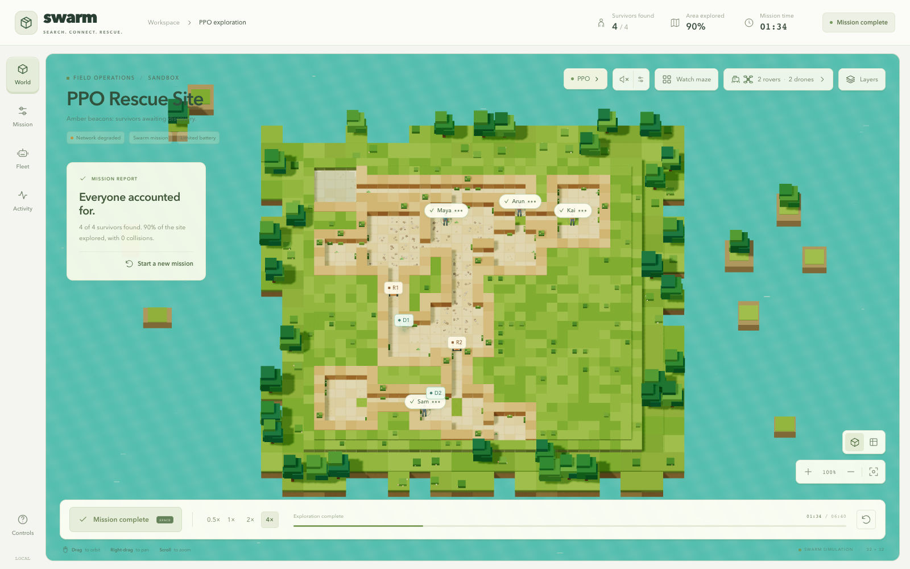
The reorganized snapshot records 160 Python tests passed with two ROS-dependent skips and 140 frontend tests passed. Those are software checks at that snapshot, not 300 physical rescue experiments. Later configuration additions have narrower recorded validation.
React manages the interface; Three.js renders the world.
The frontend uses React 18 and TypeScript, built with Vite. React Three Fiber connects React components to Three.js. Drei supplies useful scene helpers. Zustand stores application settings and the selected engine state.
The scene is split into world geometry, robot rendering, communication links and overlays. Camera helpers implement orbit, fit, focus, follow and cursor-oriented zoom. Control panels expose mission configuration, fleet telemetry and an activity feed. These are presentation and interaction layers around a deterministic simulation contract.
The soundscape uses browser audio components for ambience and event cues. Discovery stories and celebrations make progress understandable. Camera animation, decorative drone altitude and audio do not become extra policy observations simply because the operator can see or hear them.
REAL PROJECT CAPTURE
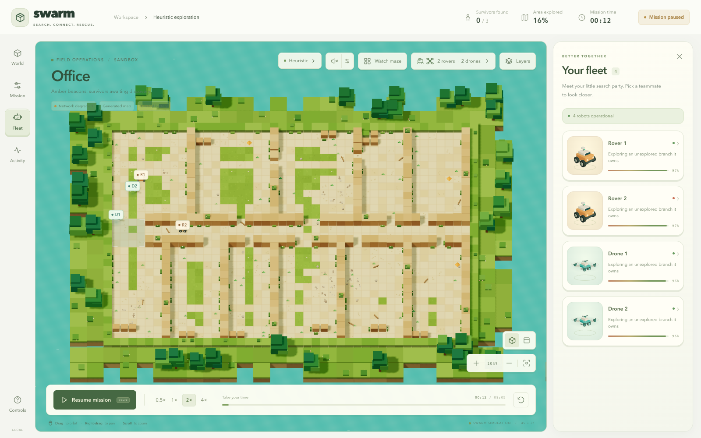
Start at main.tsx, then App.tsx and simStore.ts. Next read SimulationEngine.ts for heuristic ownership or PPOBridge.tsx for remote ownership. Finally inspect SceneRoot.tsx and the scene components to understand how state becomes pixels.
No backend is needed for that mode.
SimulationEngine coordinates TypeScript world generation, robot states, sensing, controller choices, movement resolution, peer messages and telemetry. The decentralized brain chooses from a local view and keeps its own goal. The frontend does not need a Python process to run this path.
The browser implementation adapts the Python decentralized design but is not a byte-for-byte port. It has its own random generator, scenarios, hash function, timing/presentation behavior and a documented corridor traffic-rule change. NetworkX topology is not included in its decision path.
Custom maze generation and terrain editing are heuristic features. Saved geometry is validated for connectivity and protected spawn/survivor cells before it replaces the actual engine grid. It affects movement, sensing and coverage; it is more than changing a background texture. PPO continues to use its Python-generated world.
REAL PROJECT CAPTURE
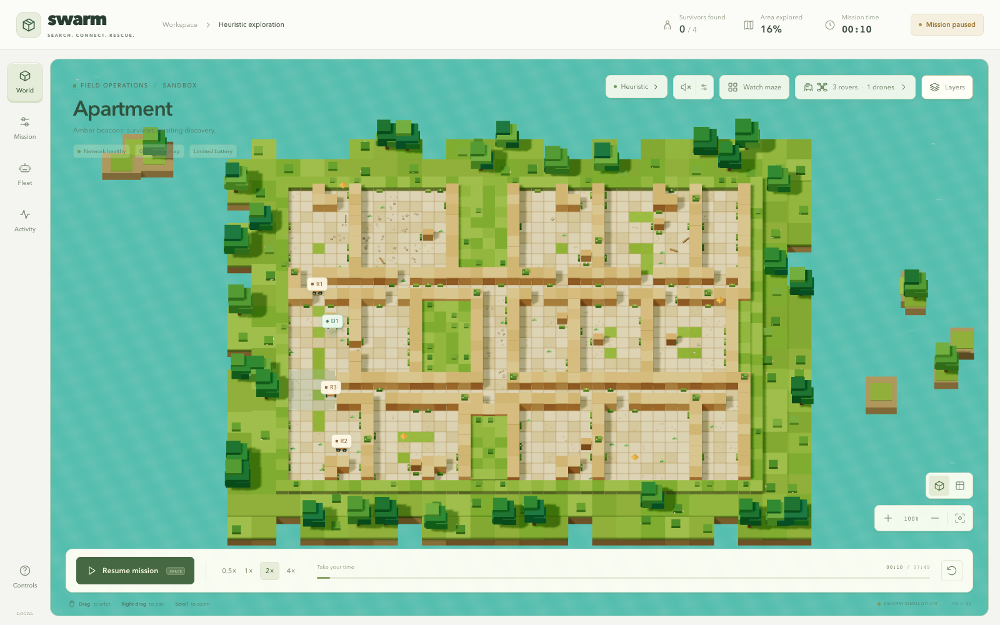
Manual and mixed control, survivor authoring, follow cameras and unlimited battery help demonstration and exploration. They do not show that PPO learned those behaviors or was evaluated under those settings.
The browser asks for a step; Python decides what happens.
Vite proxies /api/ppo to the local service at 127.0.0.1:8765. The service creates an opaque mission ID, owns its environment and per-agent recurrent states, and returns snapshots of geometry, positions, battery, private maps, sensor readings and metrics.
PPOBridge schedules requests and RemoteEngine adapts snapshots to the renderer’s interface. The TypeScript heuristic does not tick a remote PPO mission. The browser cannot submit arbitrary robot actions or a fake truth map as the policy input; Python constructs observations and chooses actions itself.
Each step request includes the expected counter. If a response is lost and the previous request is retried, the backend returns the already committed snapshot rather than advancing twice. The client permits one in-flight request and ignores stale responses from replaced missions.
On connection or protocol failure, the mission freezes with an error. It does not silently switch to a heuristic and keep calling the result PPO. Reset creates fresh mission state. Pause can still allow one already-submitted step to finish.
Start all local services with one command.
# One-time setup:
npm --prefix frontend ci
python3 -m venv .venv
.venv/bin/python -m pip install -e .
# Every subsequent launch:
npm run swarmUse Python 3.12 or newer for the supplied checkpoint extraction/service workflow; the base package declares Python 3.10+. Open Vite’s printed address, commonly localhost:5173. Heuristic mode can run with only the frontend. For the learned path choose Mission → PPO, create a mission, then launch.
During the demonstration, distinguish paused presentation dialogs from mission progress. Discovery stories pause further requests until the operator continues. Camera, sound and playback choices should not alter the Python action sequence. Hidden browser tabs stop requesting new steps.
Verify the service is healthy, the controller label says PPO when intended, and the chosen map/team/battery/time conditions match the result you plan to discuss. Keep a real recording as a fallback if the runtime fails.
This fieldbook’s hosted site is educational. It does not make your localhost Python service available to remote visitors.
Think of independent programs connected by named channels.
A ROS node is a running component that does a particular job. Nodes exchange typed messages on topics. For example, a sensor publishes scans and a controller subscribes to those scans, then publishes velocity commands. A topic is a channel name; a message type is the data schema.
Namespaces keep robot channels separate: /rover_0/cmd_vel is different from /drone_0/cmd_vel. A launch file starts the right set of processes with parameters. Packages organize code, interfaces and resources so colcon can build the workspace.
ROS 2 does not itself decide where a robot should go. Our controller code supplies that behavior. It also does not create gravity or wall contact. Gazebo supplies the physical simulator. ROS connects sensors, controllers, bridges and visualization.
| ROS idea | Project example |
|---|---|
| Node | A per-robot controller |
| Topic | /rover_0/scan |
| Message | sensor_msgs/LaserScan |
| Command | geometry_msgs/Twist on cmd_vel |
| Launch | swarm_sar_sim.launch.py |
It computes motion, contact and simulated sensors.
The description package contains Xacro robot models, survivor assets and a disaster-site world. A URDF/Xacro robot specifies links, joints, inertial properties, visuals, collisions and plugins. The world file places the floor, rubble, obstacles and people.
The current drone model uses four revolute rotor joints with MulticopterMotorModel thrust and reaction torque, motor time constants and drag. MulticopterVelocityControl translates body-velocity requests into attitude/motor behavior. The rover uses wheel contact and differential/skid-steer drive with bounded motion settings.
This is a meaningful step beyond a grid, but the models are plausible simulation models rather than calibrated replicas of specific vehicles. The flight controller uses Gazebo state; there is no claim of PX4, real IMU/GNSS estimation, wind, prop wash or detailed battery dynamics.
REAL PROJECT CAPTURE
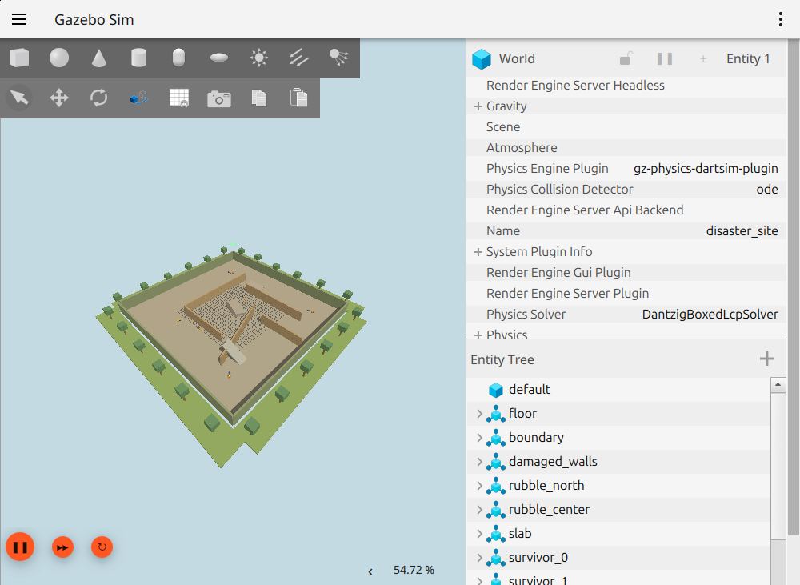
The physics guide records corrections to floor height, wheel inertias, friction and direct velocity-style drone motion. Physical models can look plausible while behaving incorrectly; trajectories, contact behavior and sensor streams provide stronger evidence than appearance alone.
It shows ROS data; it does not simulate the world.
RViz visualizes occupancy information, laser returns, robot frames and markers. In this project it displays the rover’s live private map in grayscale, robot axes/names and confirmed survivor markers. Gray unknown space and observed free/occupied cells communicate what has actually been mapped.
The supplied screenshots include several successive RViz states from one host session. The GIF is a sequence of those captures, not a continuous video with reconstructed timing. Different Gazebo camera angles likewise show one supplied world/team, not a collection of validated maps.
A green survivor dot is added only after confirmation evidence or the documented thermal/acoustic thresholds. It uses estimated detection positions and merges nearby reports. Preset survivor truth is not simply painted onto the RViz map as if the robots had discovered it.
REAL PROJECT CAPTURE
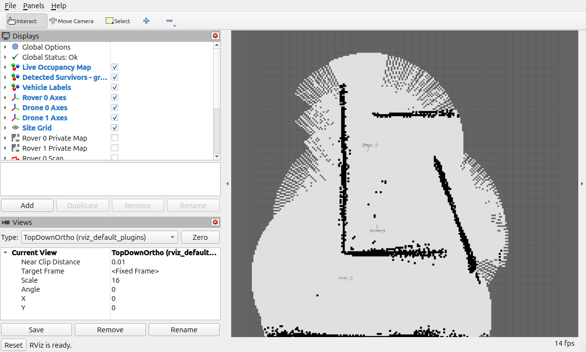
The low-resource configuration draws batched occupancy rectangles because the host’s indexed-texture map shader failed. This changes the drawing mechanism, not the source occupancy topic.
Gazebo answers “what is happening physically?” RViz answers “what data are the ROS components reporting?”
The plumbing that makes the windows agree.
ros_gz_bridge translates supported Gazebo transport messages into ROS messages and vice versa. The YAML bridges the simulation clock, wheel odometry, joint states, scans, IMU/camera streams and command topics. A bridge direction matters: commands go toward Gazebo; sensor data usually comes toward ROS.
TF is the coordinate-frame system that lets visualization and components relate robot bodies, sensors and map frames. Odometry estimates motion over time. The current waypoint path loop uses simulator world-pose odometry because wheel integration accumulated turning drift; /rover_0/wheel_odom remains a separate wheel estimate.
The interfaces package defines AgentStatus, PeerMessageEnvelope and SurvivorEvidence. Their fields include IDs, sequence/expiry, pose with covariance, battery/health, claimed frontier and evidence confidence. Typed schemas make message contracts explicit across independent nodes.
It reads configured world positions to generate range-limited noisy evidence. That is legitimate for emulating a sensor, provided truth coordinates are not directly supplied as controller observations.
Do not describe world-pose feedback in the demo as a solved real-world localization system.
Exactly two drones and one rover on repeatable routes.
The validated default demo spawns drone_0, drone_1 and rover_0. The drones take off, hover for three simulated seconds, then repeat separated flight circuits at target altitudes of 3.5 and 4.5 meters. The rover follows a smooth 16-waypoint circle with pure-pursuit steering and a forward obstacle stop.
The route passes selected survivors so each vehicle can produce an encounter. The recorded run observed confirmations around 22.0, 32.5 and 33.5 simulated seconds, with three green map dots. The world contains five survivor figures; the routes do not search every location.
This establishes repeatable motion and sensor encounters on the supplied world. It does not establish general autonomous planning, exhaustive search or deployment of the selected recurrent PPO policy. The original frontier ROS profile remains in the workspace, but the current default is the waypoint demonstration.
REAL PROJECT CAPTURE
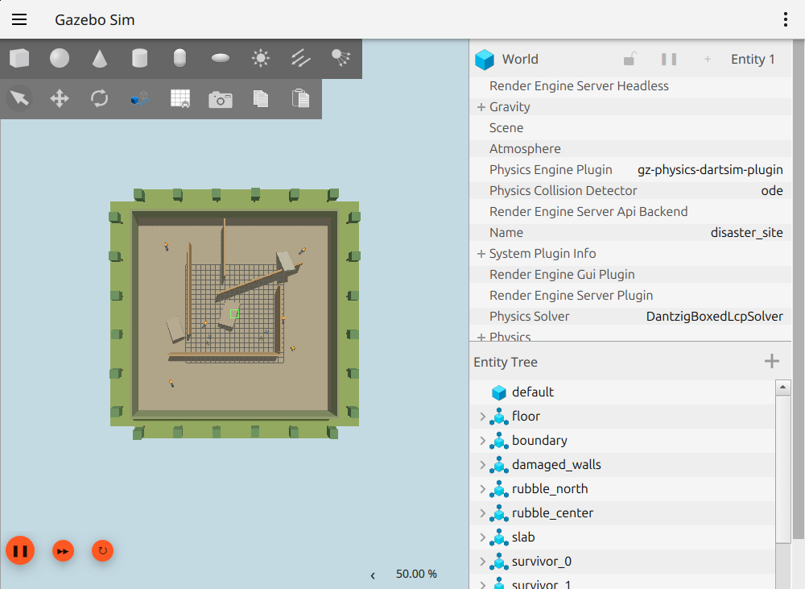
The demo uses simulator state feedback, plausible uncalibrated coefficients and software-rendering accommodations on the recorded host. Shutdown logs include an intermediate ros_gz_bridge crash after Ctrl+C; the guide preserves that issue rather than calling shutdown fully clean.
Use the version that matches the installed host.
cd simulation/ros2_ws
source /opt/ros/lyrical/setup.bash
colcon build --symlink-install
source install/setup.bash
ros2 launch swarm_sar_gazebo swarm_sar_sim.launch.py
# Inspect in a second sourced terminal:
ros2 node list
ros2 topic hz /rover_0/scan
ros2 topic echo /rover_0/demo_stageThe recorded physics host used ROS 2 Lyrical with Gazebo Sim 10. Older Jazzy/Harmonic setup notes are retained for a different Ubuntu stack. Do not mix those installation recipes. Run simulation/scripts/ros2_preflight.sh to inspect the host before building.
RViz waits for simulation clock and the selected profile’s first scan, with a 120-second wall-clock readiness limit. Headless launches can disable GUI components. Slow virtual machines may take much longer in wall time than the simulated seconds shown by the mission.
This Mac does not have the ROS/Gazebo executables used by the recorded host, so this book relies on preserved evidence for physical execution. Static package tests and Python syntax checks cannot replace a new live physics run.
Use the atlas to connect a concept to its implementation.
The searchable file atlas inventories the reviewed project source and evidence, including the later integration files. Generated fieldbook outputs are excluded to avoid recursive copies of the atlas itself. It includes source code, configuration, tests, documentation, model metadata, evidence and binary artifacts. Each entry records its path, category, size and purpose; Python entries also expose declared classes/functions and module documentation where available.
Readable project files can be opened directly in the source drawer with line numbers. Binary weights and dataset chunks are catalogued rather than embedded as executable downloads. Large artifacts are identified so you know where they belong without filling a learning website with training payloads.
The following pages give you guided routes through the most important folders. Use them before opening hundreds of files at random. A good first question is “where does this data come from?” followed by “who can read it?” and “what checks its meaning?”
Use Files in the left rail. Search a filename or a concept such as sensing, policy, bridge, map or test. The chapter source buttons are shortcuts into the same inventory.
The inventory is anchored to the source revision shown in the reader. It does not claim to discover files added after this edition.
Read the core before the algorithms above it.
| Folder / file | Responsibility |
|---|---|
| world/generator.py | Generate layouts and footprints |
| world/victims.py; reachability.py | Place survivors and check reachability |
| robots/robot.py; types.py; robot_types.py | Robot state and type/config helpers |
| sim/engine.py | Truth world, simultaneous motion and core step |
| sim/env.py | ParallelEnv, local actions, peers and safety |
| sim/planning.py | Frontier candidates and A* |
| sensing/vision.py; victim_sensor.py | Visibility, noisy signals and confirmation |
| mapping/topology.py | Private topological graph artifacts |
| network/messages.py; peer.py | Envelope schema and emulated transport |
| sim/metrics.py; logging.py | Metrics and episode artifacts |
These paths are relative to simulation/src/swarm_sar/. Utilities load YAML and manage randomness. The viz renderer is imported lazily so training does not initialize a display. Scripts under simulation/scripts/ provide manual viewing, baselines, audits, benchmarks and ROS probes.
DisasterResponseParallelEnv.step → safety filter → SwarmWorld.step → sensor/belief updates → peer broadcast/delivery → observe. That route explains the central runtime without opening training code.
The model and the environment must agree.
| Learning module | Responsibility |
|---|---|
| observation.py; policy_contract.py | Fixed, versioned input/action meanings |
| env.py | Variable teams, domains and team rewards |
| rllib_module.py | Masked PPO actor/value module |
| training.py | RLlib construction and policy mapping |
| demonstrations.py | Expert export and dataset validation |
| behavior_cloning.py | Recurrent supervised imitation |
| inference.py | Restore/use per-agent recurrent states |
| cohort_evaluation.py; expert_evaluation.py | Paired mission-level evaluation |
| training_gates.py; gpu_pipeline.py | Quality decisions and orchestration |
| release.py | Source/contract integrity and release identity |
Most entries are under simulation/src/swarm_sar/learning/. The policy contract sits one level above. Shared placement keeps training and serving imports aligned. Scripts under training/scripts/ are command-line entry points rather than separate copies of the algorithm.
training/configs contains effective settings, cohorts, gates and seed splits. datasets stores expert chunks. artifacts stores summaries/contracts/manifests. runs is ignored generated output. models preserves the selected handoff and historical Step 3 checkpoint.
Follow ownership across the HTTP boundary.
| Location | What to look for |
|---|---|
| frontend/src/store/simStore.ts | Settings, selected controller and UI state |
| frontend/src/simulation/ | Browser-only world, robots, planner and network |
| frontend/src/ppo/PPOBridge.tsx | Remote mission request lifecycle |
| frontend/src/ppo/RemoteEngine.ts | Snapshot adapter; remote ownership |
| frontend/src/scene/ | Geometry, robots, camera and overlays |
| frontend/src/components/ | Mission, fleet, controls and editor |
| frontend/src/audio/ | Soundscape, event sounds and audio bridge |
| frontend/src/presentation/ | Authored survivor stories |
| backend/ppo_service.py | Verified CPU policies and HTTP missions |
| frontend/vite.config.ts | Development proxy and build setup |
The backend uses Python’s HTTP server machinery and a bounded mission-session store. Session identity, idle expiry and expected-step checks prevent common integration mistakes. The atlas includes the actual functions and line-numbered source so you can verify a statement instead of relying on folder names.
The simulator’s audio provides ambience and mission cues. This fieldbook’s audio is English educational narration. They are separate features with different purposes.
Messages, models, controllers and launch composition.
| Package | Important contents |
|---|---|
| swarm_sar_interfaces | AgentStatus.msg, PeerMessageEnvelope.msg, SurvivorEvidence.msg |
| swarm_sar_description | rover/drone Xacro, survivor model, disaster_site.world |
| swarm_sar_control | decentralized_agent, peer_network_bridge, survivor_oracle, waypoint_demo, demo_views, readiness helpers |
| swarm_sar_gazebo | Master launch, RViz launch/config and ros_gz_bridge YAML |
Every package has package.xml metadata; CMakeLists.txt or Python setup files register build/install behavior. The control package’s tests cover model/scene helpers and waypoint behavior. Tools include a subscribe-only encounter probe, which observes reports rather than injecting discoveries.
Do not edit original evidence to make a story cleaner. The logs and intermediate flight records explain what changed during engineering. The final curved-route record, intermediate rectangular-path record and initial drift record describe different stages.
Launch file → active profile → spawned descriptions → command/sensor bridges → waypoint/controller node → private map and evidence topics → RViz configuration. This route tells you which behavior is actually enabled by default.
Not every text file has the same authority.
tests/simulation checks world generation, motion, sensors, local controllers, topology, network and scalability. tests/training checks contract/rewards, seeds, datasets, cloning, gates and pipeline state. tests/backend checks service behavior. tests/ros2 includes package/model checks that may depend on a ROS host.
frontend/src/tests covers deterministic browser simulation, control, scenarios, network, collisions, camera, audio, encounters, presentation and PPO adapter behavior. Browser scripts exercise actual application flows and write validation reports. Passing a unit test and recording a live browser run are different kinds of evidence.
docs/planning describes intended work. docs/audits records scoped checks and historical findings. docs/guides explains operation. docs/validation contains machine-readable results. docs/media and docs/evidence preserve actual captures and logs. Later project-report notes resolve several older claims and paths.
python -m pytest -q
npm --prefix frontend test
npm --prefix frontend run build
python training/scripts/verify_policy_contract.py
python training/scripts/freeze_gpu_release.py --verifyThese are reproduction commands, not a claim that every historical experiment was rerun while authoring this book.
Lead with the problem, then the mechanism.
“After a disaster, indoor spaces can be dangerous and GPS may be unavailable. Our prototype explores how a mixed team of drones and rovers can search unknown spaces using local maps, noisy thermal and acoustic clues, and peer-to-peer communication.
We built deterministic simulators, a 3D mission-control interface, and cooperative PPO policies warmed up with expert demonstrations. The saved Python policy can drive the mission shown in the browser. A separate ROS 2/Gazebo demo checks physical motion and sensor encounters.
Our results are synthetic development evidence, with a known weakness on large mazes. We can show exactly which code chooses actions, which safety rules protect motion, and which result belongs to each runtime.”
REAL PROJECT CAPTURE
It explains a meaningful problem, the actual approach and a credible boundary. You can expand any sentence into a technical answer instead of needing to retreat from an exaggerated claim.
Practice it in your own words. A clear explanation that you understand will survive questions better than a memorized list of acronyms.
Let one concrete mission hold the explanation together.
| Time | What the audience learns |
|---|---|
| 0:00–0:40 | Disaster scenario and why mixed robots help |
| 0:40–1:25 | Private maps, frontiers and imperfect clues |
| 1:25–2:15 | Expert → BC → recurrent PPO; seven actions |
| 2:15–3:20 | Live browser mission with explicit controller label |
| 3:20–4:10 | Development comparison and large-maze weakness |
| 4:10–5:00 | Separate ROS physics evidence and next steps |
Before launching, state which runtime is active. In PPO mode, explain that Python owns decisions and simulation while the browser renders snapshots. During a discovery, pause on the sensor/evidence story rather than treating a fictional dialogue as a real perception output.
When showing Gazebo or RViz, name the supplied world, three-vehicle team and waypoint default. Use the preserved recordings if live infrastructure is unavailable. A recording is acceptable when you label it honestly.
Agree who speaks and who operates. Rehearse the transitions and prepare a short answer for connection failure, a slow VM and a mission that times out.
Try answering before revealing the field notes.
What exactly is decentralized if everything runs on one computer? Why use PPO when frontier search already works? Did you implement MAPPO, GNN communication or collaborative SLAM? Why do you have two policies instead of one per robot?
How does a robot know there is a survivor? What happens when radio communication fails? Why do zero collisions not prove learned collision avoidance? What part of the demonstration is real physics? Is your model learning during the live demo?
Use the practice cards below. Answer aloud first, then reveal a precise answer. The goal is to connect an architectural claim to evidence, not to sound technical.
State the mechanism. Name the relevant implementation. State the result and its boundary. For example: “The actor uses private observations and delivered peer features. Inference is centralized as a process but decentralized in information. Physical traffic still has a simulator safety shield.”
Prepare the evidence before the room is watching.
If PPO disconnects, explain the pause and reset deliberately. Do not quietly switch modes while leaving a PPO claim on screen. If Gazebo runs slowly, compare simulated time with wall time. If a custom setting changes the mission, call it a demonstration condition rather than the benchmark.
Turn limitations into concrete experiments.
Large mazes: inspect failure trajectories, distinguish search inefficiency from exhausted budgets, and compare policy/planner/memory changes on fixed development cases. A stronger mean should not hide a weaker worst cohort.
ROS learned execution: implement and preserve a versioned observation adapter with per-robot recurrent state, verify action semantics and safety, and test the selected checkpoint identity on the actual ROS runtime. A screenshot of another host’s actor load is not a substitute.
Localization and sensors: replace simplified assumptions with measured or explicitly modeled uncertainty, calibration, realistic occlusion and an actual localization/mapping pipeline. A future GNN or collaborative SLAM component should earn its complexity through an ablation.
Final evidence: freeze the candidate and protocol before opening sealed test seeds. Compare paired baselines, preserve failures and report uncertainty. Then move toward physical testing with an appropriate operational process.
Evaluate otherwise matched systems with and without an element, such as peer messages, memory or BC warm start. The difference helps assess that element’s contribution. Existing baseline comparisons do not automatically isolate every architectural benefit.
Keep the plain-English meaning beside the acronym.
| Term | Meaning |
|---|---|
| RL | Learning choices from reward-driven experience |
| MARL | RL with interacting decision makers |
| PPO | Policy optimization using a clipped surrogate objective |
| MAPPO | Commonly PPO with centralized value learning and decentralized actors |
| BC | Supervised imitation of expert actions |
| Actor / policy | Produces action scores or probabilities |
| Critic / value | Estimates expected future return |
| Return | Accumulated, usually discounted reward |
| Advantage | How much better/worse an outcome was than the baseline |
| GAE | A way to combine temporal-difference residuals |
| Entropy | A measure of spread in the action distribution |
| LSTM | A recurrent network with learned memory gates |
| Rollout | Experience generated by running a policy |
| Checkpoint | Saved learned state and module metadata |
Say “cooperative type-shared recurrent PPO” for the selected learning path. Use MARL for the broad setting. Do not turn an algorithm family name into a claim about a centralized critic that the code does not contain.
The difference between a concept and its implementation matters.
| Term | Meaning |
|---|---|
| Frontier | Known traversable space bordering unknown cells |
| A* | Search that ranks paths by spent plus estimated remaining cost |
| Belief / occupancy map | The robot’s current knowledge of cells |
| Topology | Places and their connections, represented as a graph |
| SLAM | Simultaneous localization and mapping; rover integration is implemented, live Linux validation remains pending |
| GNN | Learned graph processing; not the checked-in controller |
| Odometry | Motion/pose estimate accumulated over time |
| TF | Relationships between ROS coordinate frames |
| LiDAR scan | Range measurements around a sensor |
| URDF / Xacro | Robot description and its macro-based authoring format |
| SDF world | Simulation scene and model description |
| ROS topic | Named typed-message channel |
| Gazebo | Rigid-body simulator and sensor environment |
| RViz | Visualizer for ROS messages and frames |
| TTL | How long a message remains valid |
A renderer displays. A sensor estimates. A planner routes. A policy selects. A shield blocks unsafe intents. A physics engine moves bodies. Those verbs keep your explanation precise.
Repository evidence first; primary references for the foundations.
The book is grounded in the reviewed source snapshot, its current project report, actual code, configuration, evaluation JSON and capture manifests. Chapter source buttons open the corresponding checked-in text. Historical documents are retained with their scope instead of silently rewritten.
The original PPO paper describes the optimization family. The cooperative PPO/MAPPO paper provides context for centralized versus local value learning. PettingZoo and RLlib documentation explain the environment and multi-agent interfaces. Gazebo documentation explains ROS transport integration. These references support general concepts; project-specific numbers come from this repository.
Understanding is being able to connect the whole chain.
A world is generated. Robots begin with private maps. They observe a little space, receive imperfect heat and sound clues, and sometimes hear from peers. A local observation is encoded into a fixed vector. The appropriate saved rover or drone policy chooses a valid high-level option.
Planning turns that option into an intended step. Safety and movement rules resolve conflicts. The world advances, sensors update, evidence may confirm a survivor, messages are delivered or lost, and the next observations are constructed. The browser shows the result. During training, team rewards also help update the policy.
In the separate physics path, robot models move in Gazebo, ROS carries commands and observations, and RViz shows the reported map and frames. The current default follows repeatable waypoints. Each path has evidence and limitations that you can name.
REAL PROJECT CAPTURE
Explain what each robot knows, which part is learned, which part is programmed, what the strongest result means and what still fails. Then open a source file and point to the implementation. You are ready when those answers form one story.
Om Rashiya · Yash Bharvada · Purva Shah · Pankti Akbari. Search together. Share discoveries. Find survivors.
SLAM begins with two questions: where am I, and what is around me?
Imagine walking through a dark school with a pencil and a notebook. You draw the corridor after every few steps. If you think you walked one meter but actually walked a little less, the drawing slowly bends. A range sensor gives you wall distances. Comparing a new set of distances with walls seen before helps correct your position and the drawing together. That is the basic reason localization and mapping belong in one problem.
SLAM means simultaneous localization and mapping. Wheel odometry predicts how the rover moved. Lidar measures nearby surfaces. Scan matching compares those observations to estimate a correction. A pose graph stores relationships between observations so later evidence can improve the estimate. Recognizing a previously visited place may create a loop constraint, but merely enabling loop-closure parameters does not demonstrate a successful closure.
Our new ROS profile integrates slam_toolbox separately for each rover. This is implemented source with local tests; this Mac has not run the full Linux scan-matching experiment. The original Gazebo and RViz photographs remain real historical host captures, rather than proof of the new integration.
REAL PROJECT CAPTURE
SLAM estimates pose and observed geometry. PPO chooses a search action from its observation. Better localization may make an observation more trustworthy; it does not automatically teach a policy how to allocate its battery on a larger maze.
Every arrow should correspond to an executable interface.
Gazebo moves the robot and simulates its lidar. The ROS bridge publishes the scan and wheel feedback. Each rover has its own slam_toolbox instance and map topic. The toolbox estimates the correction from that rover’s map frame to its odometry frame. The adapter uses this transform chain to publish an estimated pose in the common mission frame.
slam_agent.py is the ROS-facing adapter. slam_support.py holds projection, snapshot assembly, map admission, budgeting and lease logic that can be tested without a running ROS installation. The launch and parameter files choose the frames and lifecycle settings. The runtime probe observes scans, map updates, motion, transform edges and receiver-applied peer snapshots.
The adapter does not publish velocity commands. A separate controller decides motion. Exactly one active motion controller should own each robot’s cmd_vel topic. The waypoint controller is a useful repeatable mapping diagnostic. It must be labelled waypoint control; moving during a scan-built map demonstration is not evidence of PPO execution.
| Component | Job |
|---|---|
| Gazebo / bridge | Physical motion and simulated sensor messages |
| slam_toolbox | Per-rover scan matching and local pose graph |
| slam_agent | Estimated mission-frame feedback and mapping interfaces |
| Motion controller | Select goals and publish physical commands |
| Runtime probe | Record observed behavior and missing evidence |
A coordinate is meaningful only when its frame is known.
A rover can say “I am at two, three” only after saying which origin and axes it uses. The mission map is one ruler. Each rover’s local map is another. Wheel odometry is a third. TF records how to move between these rulers. Applying a starting offset twice puts the robot in the wrong corridor even if every individual number looks reasonable.
The new profile aligns the rover maps using known starting positions. Static transforms connect the mission map to the rover map frames. SLAM owns each rover-map to rover-odometry correction. Wheel odometry owns rover-odometry to base_footprint. Robot state publishing connects the body to the lidar. Ground-truth world transforms must not compete for those same edges.
The canonical rover odometry used by the integration comes from the estimated chain. Ground-truth odometry has a separate name for evaluation and sensor/radio emulation. Estimated pose is not a measured velocity or covariance: the adapter’s twist is unpopulated and its covariance is explicitly unavailable. Use suitable wheel feedback when a controller requires velocity.
map
→ rover_0/map known start alignment
→ rover_0/odom SLAM correction
→ base_footprint wheel estimate
→ base_link → lidar_linkPeer knowledge supplements a local map; it does not rewrite its pose graph.
Each rover keeps a local scan-built map. It can also receive occupancy information from peers. The integration exposes local knowledge separately from peer-only knowledge and the combined belief. Incoming peer cells fill unknown regions under admission rules; they do not overwrite a rover’s trusted local observations or enter the slam_toolbox pose graph.
A ROS occupancy grid includes width, height, cell resolution, an origin and an orientation. Projecting it into the common belief must respect all of them, including a rotated origin. The fixed mission belief is 240 by 240 cells at 0.2 meters per cell: a configured 48 by 48 meter canvas, not a demonstrated explored area. The trained grid policy uses a different observation geometry and needs an explicit compatible adapter.
This implementation assumes known relative starts. It does not solve unknown-start map registration, aerial visual SLAM or distributed joint pose-graph optimization. Drones retain simulator localization and raycast mapping. Calling the result local rover SLAM with decentralized map sharing states the actual boundary clearly.
REAL PROJECT CAPTURE
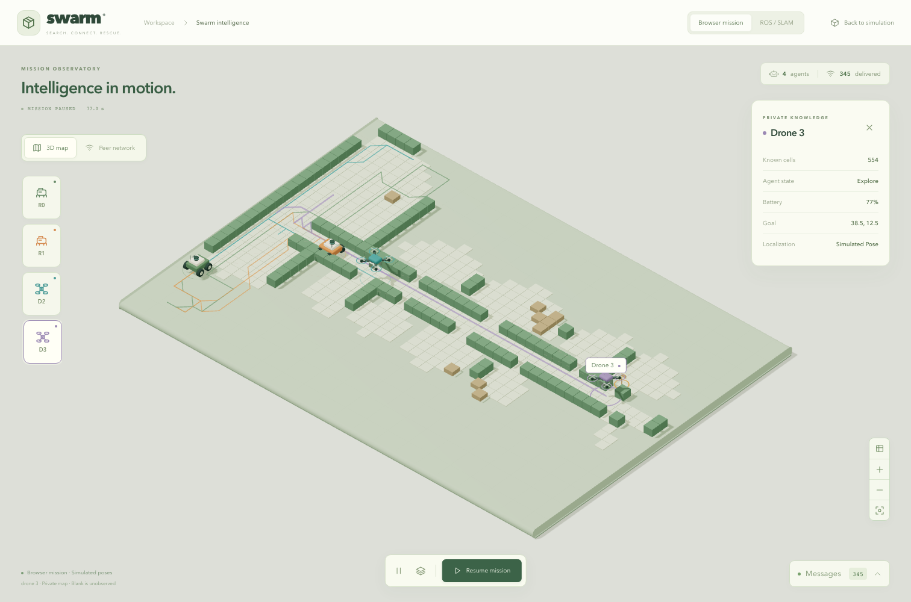
Teal peer knowledge should mean that a received message contributed it. Drawing all robots’ maps together directly in the browser would make an attractive picture while bypassing the communication problem.
Evidence is a chain of observations, not a launch command.
On Linux, first launch the two-rover waypoint mapping diagnostic. Verify unique transform authorities, fresh scans, independent SLAM map topics and active lifecycles. Move both rovers and observe meaningful scan-built occupancy. Run the runtime probe and inspect the result. A successful build establishes package compatibility, not correct live mapping.
Then isolate a rover’s radio for fifteen simulated seconds. Its own mapping and motion should continue. Received revisions should stop, peer information should age, and short-lived claims should expire. Reconnect and measure time to a complete repaired snapshot. Preserve received maps rather than erasing them to manufacture a visual effect.
For learned control, recover the actual Linux PPO controller and inspect its observation and actuator code. The supplied host log mentions actors, but the matching source is absent in fetched refs. Verify model identities and trace a learned decision through cmd_vel, physical motion, sensing and the next estimated observation. Do not silently substitute the waypoint controller. Demonstrated loop closure and map error need their own measurements.
ros2 launch swarm_sar_gazebo slam_demo.launch.py scenario:=rovers controller:=waypoint rosbridge:=true
python3 simulation/ros2_ws/tools/slam_runtime_probe.py --seconds 120 --wall-timeout 600 --output artifacts/slam_runtime.jsonThe observatory makes knowledge and communication visible.
The main maze shows the physical or simulated site from the operator’s viewpoint. The observatory answers a different set of questions: what does this robot know, where has it travelled, what goal has been reported, and which messages crossed the network? A dedicated page gives these questions room without covering the main world with permanent panels.
The 3D map renders observed occupancy as instanced geometry. The rover and drone models sit at reported positions; trajectories come from received or simulated state. Unknown cells remain unobserved. Selecting an agent reveals its private map and details. Browser beliefs already contain merged knowledge, so that source cannot truthfully separate peer-only cell provenance.
The peer-network view places posed agents in a coordination layout and draws actual transport links and packet pulses. It resembles a communicating network, but it is not a visualization of neural activations. A graph drawing does not establish that the decision policy is a graph neural network.
REAL PROJECT CAPTURE
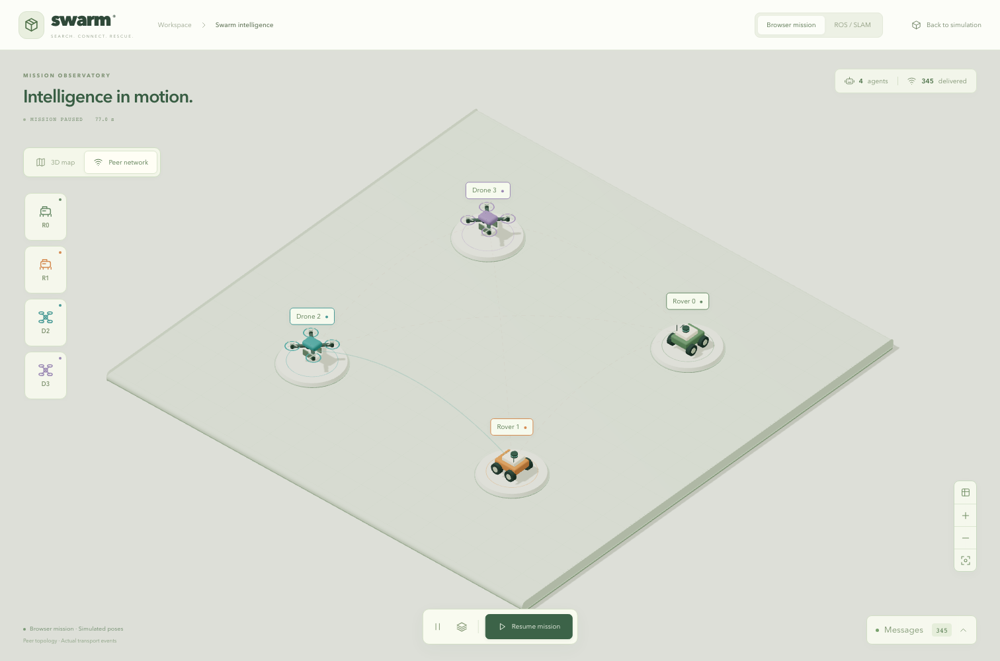
Use Swarm intelligence in the simulator header. Browser mode is ?mode=observatory; the ROS source is ?mode=ros. Returning from the browser observatory preserves the same mission engine and PPO session.
Queued, transported and applied are different events.
Suppose rover A notices a new corridor and sends a map snapshot to rover B. First a message is queued. It consumes a sender byte budget, waits through modeled delay and may be dropped by range, walls, packet loss, partitions or bandwidth. Transport delivery means the receiver got bytes. It does not yet prove the receiver accepted the content into its belief.
Large snapshots are chunked. Chunks can arrive out of order, be duplicated or be lost. A receiver buffers valid pieces, requests missing data and applies a complete accepted revision atomically. Session identity and sequence checks prevent delayed messages from an old run replacing current knowledge. TTLs and leased goal claims prevent stale intent from reserving a corridor forever.
Both peer and slam_peer traffic use the same modeled sender budget. A direct SLAM-to-SLAM subscription that bypasses the radio would defeat the experiment. The UI exposes packet states and receiver-applied events separately, so delivery should never be relabelled application merely to improve a success counter.
| Observed event | What it establishes |
|---|---|
| Queued | Transport accepted a send attempt |
| Dropped | A modeled channel or admission condition rejected traffic |
| Delivered | Transport reached the receiver |
| Applied | Receiver accepted usable knowledge |
A live interface should keep missing information visible.
The observatory provides isometric and top-down views, orbit, pan, zoom and camera reset. Layers independently reveal paths, frontier markers and packet effects. Agent inspection opens only when needed. The message tray starts closed, supports delivered or dropped filters and exports a JSON snapshot for inspection.
Freeze visualization holds what you see. Pause mission stops requesting new browser mission steps. Those are different controls. Rendering interpolation may smooth received poses, but it does not predict the controller’s next route. Motion effects stop when data is stale, simulation time stops, the view freezes or reduced motion is requested.
A disconnected ROS view shows a connection prompt instead of placeholder robots. Radio isolation uses the actual ROS service; its acknowledged request is separate from the state subsequently reported by network telemetry. Stale status disables the controls. If the graphics context fails, recovery remains available without taking message inspection and mission controls down.
REAL PROJECT CAPTURE
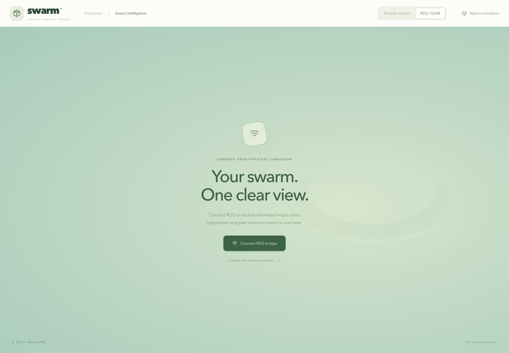
The browser captures in this chapter show actual browser telemetry. They are not live Linux SLAM evidence. The historical RViz captures establish their original session only.
Small presentation adapters protect the simulation boundary.
| File | Responsibility |
|---|---|
| types.ts | Explicit snapshots, grids, agent poses and packet states |
| useObservatory.ts | Adapt real browser state or ROS messages; validate frames and freshness |
| BrowserObservatory.tsx | Keep the browser mission ticking while the main world is unmounted |
| RosObservatory.tsx | Bind the ROS client to the shared page |
| ObservatoryPage.tsx | Controls, selected-agent details, bridge dialog and message export |
| ObservatoryScene.tsx | Three.js occupancy, models, paths, links and camera |
| SceneBoundary.tsx | Renderer failure recovery |
REAL PROJECT CAPTURE
The browser adapter does not replace PPOBridge. That bridge remains mounted when moving between the main scene and observatory. Otherwise merely opening a visualization could create a new mission or discard recurrent state. The integration tests compare exact engine identity and session creation counts across navigation.
The ROS adapter validates incoming occupancy grids and mission-frame poses. Browser tests feed explicitly synthetic socket fixtures to check UI contracts. Those tests are useful, but their output must not be presented as a live mapping run.
Do not blame an optimizer before inspecting a trajectory.
Doubling a square map’s side length multiplies its cell area by four. If the team, battery and deadline stay fixed, each robot may need to travel farther and choose between more branches. A successful small-map policy can still spend its limited energy returning to familiar corridors or waiting in an unhelpful location.
Our diagnosis records proposed actions, holds, goal changes, repeated movement, map admission and termination. Comparing the policy with an expert under matched initial worlds and budgets separates a policy weakness from a world-generation problem or a resource limit. A logged hold is an observation, not a complete explanation of a neural network’s internal reasoning.
SLAM does not solve this allocation problem automatically. It replaces a localization assumption with an estimator and can introduce its own drift or uncertainty. Larger-map improvement still requires careful search decisions, observations that expose useful branches, appropriate resources and controlled evaluation.
Changing planner logic while freezing actor weights tests the execution system. Retraining at the same time would make it harder to identify which change caused the result.
A robot should neither change its mind every step nor cling to a bad goal.
Goal persistence keeps pursuing a valid reachable target long enough to make progress. Loop prevention notices repeated positions or corridors and discourages another useless return. Both sound sensible. Their effect depends on how they interact with route replanning, evidence investigation, peer claims, action masks, energy and the remaining horizon.
The project keeps these ideas in experimental wrappers and ablation scripts. They do not silently alter the selected checkpoint or redefine what its action slots mean. The experiments preserve initial cases and compare trajectories under the same budget. If a wrapper overrides an action, the later observations and policy choices will also change; it is a new closed-loop trajectory.
A poor result should remain in the report. A method that improves coverage while missing survivors has not solved search and rescue. These runs motivate better candidate selection and information estimates; they are not a default-controller promotion.
goal_governor.py implements the controlled goal/loop interventions. ablate_goal_governor.py runs comparisons and logs overrides. Read the audit before interpreting an attractive trajectory.
Unknown cells behind a wall are not necessarily visible from a frontier.
An information-gain score estimates how much new knowledge a goal might reveal. A simple square-window score counts nearby unknown cells. It is cheap, but optimistic: a wall can hide most of those cells. A visibility-aware estimate attempts to account for occlusion. A branch-diverse candidate pool attempts to offer genuinely different corridor choices instead of several points from one branch.
The utility experiment also accounts for route energy, visited goals, peer claims and the remaining time. A HOLD-release rule can force an affordable exploration opportunity after repeated holds. Such an override is a hybrid heuristic intervention, not improved learned weights. Expanding or reordering the actor’s trained action slots would require a compatible policy contract; the widened experimental pool is not fed into the old actor.
On four 56-cell development cases, one utility comparison found four of seven survivors versus two of seven for baseline, but regressed another case from one of two to zero of two. Additional visibility/diversity comparisons also failed to establish a robust improvement. A promising aggregate does not erase a concrete failure.
A benchmark protects against tuning every decision to maps you already saw.
The frozen development protocol uses 32, 56 and 64-cell maps, maze/rooms/cave families and four seeds per stratum. Two rovers, two drones, original batteries and a 400-step horizon stay fixed. Discovery has thirty-six cases; a separate confirmation allocation is reserved for one nominated frozen candidate. Final-test seeds remain sealed.
Larger room maps originally failed a reachable-area generation requirement when room counts stayed fixed. Room counts were scaled with area before evaluating controllers. Both the failed and corrected generation checks were retained, no seeds were replaced, and no controller outcome selected the adjustment. World validity must be established before policy comparison.
The protocol locks relevant source, config and actor identities. Its runner defaults to validation rather than execution. Candidate confirmation requires a nomination tied to complete discovery results and is marked consumed before episodes begin. These checks improve auditability; deleting or copying local bookkeeping could still defeat the intended discipline.
Average survivor recall equally across size/layout strata. Promotion requires at least ten percentage points gain over PPO across the large strata, small-map loss no worse than two points and no stratum loss greater than five points. Those are engineering gates, not proof of statistical significance.
The largest weakness is specific enough to act on.
| Size / family | PPO survivors | Expert survivors |
|---|---|---|
| 32 maze | 6 / 13 | 8 / 13 |
| 32 rooms | 7 / 7 | 7 / 7 |
| 32 cave | 10 / 10 | 10 / 10 |
| 56 maze | 0 / 7 | 3 / 7 |
| 56 rooms | 5 / 12 | 7 / 12 |
| 56 cave | 10 / 11 | 10 / 11 |
| 64 maze | 0 / 13 | 1 / 13 |
| 64 rooms | 3 / 8 | 8 / 8 |
| 64 cave | 6 / 10 | 10 / 10 |
These are thirty-six matched PPO/expert case pairs: seventy-two episodes. The recorded inspection verified the frozen lock, paired initial signatures, complete compressed traces and expected cases. It did not retrain, rerun confirmation or access final seeds.
The maze weakness affects both controllers at large scale, while the 64-cell room gap points to a policy/search gap under those resources. The four-seed strata are small, dependent development samples. Do not merge these totals into the older checkpoint review as if they were the same evaluation.
The next justified step is a predeclared candidate comparison on discovery, followed by untouched confirmation only after passing the gates. SLAM validation and search-policy improvement remain separate evidence tracks.
Spend rehearsal time on the mission rather than juggling terminals.
npm run swarm
# Read-only dependency and service check:
npm run swarm -- --checkThe root package script runs scripts/swarm.mjs. It checks the local Python environment and frontend dependencies, inspects the expected ports and reuses healthy services. Missing services are started with named logs. It waits for the PPO health endpoint before printing the complete set of ready addresses.
The frontend is at port 5173, the Python PPO service at 8765 and the local audiobook at 8088. Ctrl+C stops processes started by this launch. An existing healthy server is left alone. A conflicting process is reported instead of being killed. First-time dependency installation is still required on a fresh computer.
ROS, Gazebo, slam_toolbox and rosbridge belong on the compatible Linux ROS host. Opening the ROS page on the Mac does not start those native programs. Use the sourced Linux launch and, when necessary, an SSH tunnel to the bridge. The workstation launcher does not start training.
A setup change should show its consequence immediately.
Changing the PPO seed, map size, site, rover/drone counts, radio, battery mode or duration now updates a preview automatically. The bridge briefly debounces rapid edits, cancels superseded requests and accepts only the current response. Invalid robot counts or durations do not generate an invalid world.
The preview endpoint uses the same Python environment generation and initial sensing as mission creation. It closes its temporary environment without registering an active session or taking a policy step. RemoteEngine renders the exact returned geometry and initial robot state. This avoids making a different-looking TypeScript approximation of a Python map.
Create mission then opens a real session with the selected settings and fresh recurrent state. Launch remains disabled in preview mode and becomes available after creation. Editing settings again returns to preview, closes the earlier session and prevents late responses from replacing the new view. Refresh preview does not create a mission.
REAL PROJECT CAPTURE
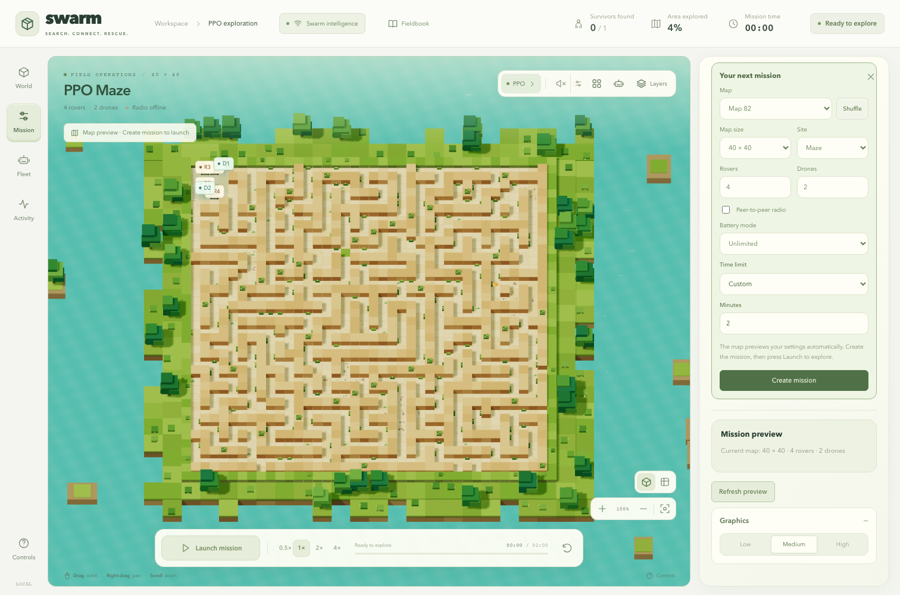
Actual browser controls were exercised against the running backend. The created grid and robot spawns matched the preview, no session was created during the preview sequence, and the created mission then advanced using the real saved actors.
A strong presentation connects each claim to its evidence.
REAL PROJECT CAPTURE
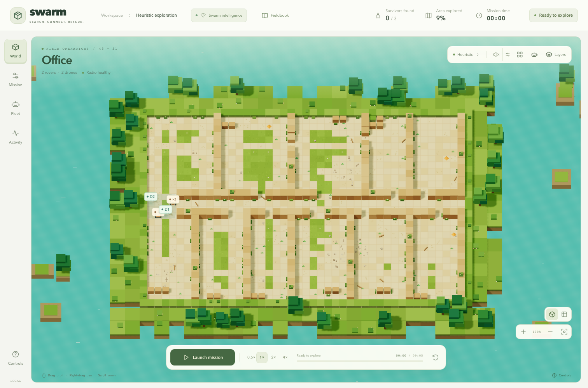
The strongest story is a reproducible chain: sensor observations create private knowledge; the policy chooses an action; a planner and safety rules resolve motion; peers exchange bounded knowledge; the UI reveals what actually happened. Distinguish implemented source, automated contract checks, recorded runtime evidence and pending physical validation.
The English fieldbook now includes these integrations, current screenshots and experimental findings. Its atlas records the reviewed source revision. The website does not turn local CPU inference into a hosted public robot service. Team: Om Rashiya, Yash Bharvada, Purva Shah and Pankti Akbari.